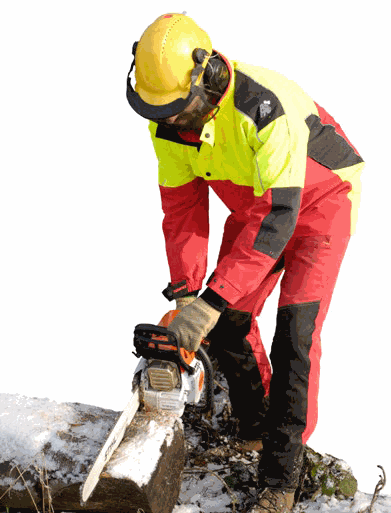
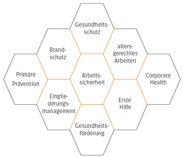

Praxis-Check
Sicherheitsbeauftragte werden tätig, wenn ihnen auffällt, dass Verbandskästen nicht aufgefüllt sind, Verbandbucheinträge nicht erfolgen oder die Aus- und Fortbildung der Ersthelfer nicht ausreicht oder nur unregelmäßig angeboten wird.
Ein wirksames Tätigwerden der Sicherheitsbeauftragten setzt deren fachliche Nähe zu den Arbeitsbereichen der Beschäftigten im eigenen Zuständigkeitsbereich voraus. Die notwendige fachliche Nähe ist zum Beispiel dann gegeben, wenn die Sicherheitsbeauftragten und die Beschäftigten dauerhaft gleiche oder ähnliche Tätigkeiten ausüben und wenn den Sicherheitsbeauftragten die Beschäftigtenstruktur im Zuständigkeitsbereich, insbesondere im Hinblick auf Qualifizierung und Sprache bekannt ist. Neben der fachlichen Nähe sind aber auch Kenntnisse der Sicherheitsbeauftragten im Arbeitsschutz innerhalb des Zuständigkeitsbereichs erforderlich. Ein ausreichendes Arbeitsschutzwissen verschafft ihnen bei Gesprächen mit Führungskräften und innerhalb des Kollegiums Achtung und Vertrauen. Dazu gehören unbedingt die Ergebnisse der Gefährdungsbeurteilung aus dem jeweiligen Tätigkeitsbereich. Das benötigen Sicherheitsbeauftragte, um ihre Kolleginnen und Kollegen zu überzeugen und für Arbeitssicherheit und Gesundheitsschutz zu gewinnen.
Die folgenden Arbeitsschutzthemen sollen einen ersten Einstieg in die, für die meisten Sicherheitsbeauftragten, relevanten Themengebiete erleichtern. In Bezug auf diese Themen und auf solche, die noch über die ersten Schritte im Arbeitsschutz hinausgehen, ist es für die meisten Sicherheitsbeauftragten erforderlich, sich zum Teil sehr spezifische Arbeitsschutzkenntnisse anzueignen. Das kann in der meist branchenorientierten Aus- und Weiterbildung durch die zuständigen Unfallkassen, Berufsgenossenschaften oder auch ergänzend durch betriebsinterne Schulungen erfolgen. Individueller oder ergänzend erwerben Sicherheitsbeauftragte Fachkompetenz im Arbeitsschutz durch Recherchen im Vorschriften- und Regelwerk der DGUV (siehe Abschnitt 5.2 Weiterführende Informationen). Mit den Praxischecks, die einzelnen Fachthemen betreffend, werden „Beispiele Guter Praxis“ für das Tätigwerden von Sicherheitsbeauftragten beschrieben. Die dort angesprochenen unsicheren Situationen sind im Regelfall Anlass für alle Beschäftigten, tätig zu werden. Die Praxis zeigt jedoch, dass die Sicherheitsbeauftragten diese Situation in den meisten Fällen zuerst erkennen und entsprechend reagieren können.
Wir selbst oder andere Menschen können jederzeit in eine Unfall- oder Erkrankungssituation geraten, in der umgehend Hilfe nötig ist. Kommt es dann zu einer Verzögerung im Ablauf der Rettungskette, kann diese die Dauer und Schwere der Unfallfolgen erheblich beeinflussen. Um einen reibungslosen Ablauf in Notsituationen zu gewährleisten, muss alles, was zur Ersten Hilfe gehört, vom Unternehmer/von der Unternehmerin gut organisiert und zu jeder Zeit im Betrieb sowie bei allen auswärtigen Tätigkeiten abrufbar sein. Dazu gehört:
Praxis-Check
|
|
Sicherheitsbeauftragte werden tätig, wenn ihnen auffällt, dass Verbandskästen nicht aufgefüllt sind, Verbandbucheinträge nicht erfolgen oder die Aus- und Fortbildung der Ersthelfer nicht ausreicht oder nur unregelmäßig angeboten wird. |
Unternehmen müssen Notfallmaßnahmen organisieren und Pläne erstellen, um gegen Brände, Explosionen, unkontrolliertes Austreten von Stoffen und sonstige gefährliche Störungen des Betriebsablaufs gerüstet zu sein. Zu diesen Maßnahmen gehören:
Praxis-Check
|
|
Während eines Probealarms können Sicherheitsbeauftragte sehr gut feststellen, ob die Evakuierung von Beschäftigten, Betriebsfremden und Personen mit eingeschränkter Mobilität funktioniert. |
Unterweisung
Sicherheit und Gesundheit bei der Arbeit zu gewährleisten, erfordert von den Beschäftigten ein umfangreiches Wissen in Bezug auf die notwendigen Sicherheitsaspekte im Betrieb und gegebenenfalls in Bezug auf die Bewältigung kritischer Situationen. Dies trifft besonders auf alle Arbeitsabläufe zu, die ein höheres Gefahrenpotential beinhalten. Es ist daher äußerst wichtig, dass der Unternehmer/die Unternehmerin alle Beschäftigten intensiv über die Risiken ihrer Arbeit informiert und in das richtige Verhalten in kritischen Situationen mindestens jährlich unterweist. Auszubildende sind abweichend davon einmal im halben Jahr zu unterweisen. Eine geeignete Dokumentation der Unterweisung ist verpflichtend.
Praxis-Check
|
|
Beobachten Sicherheitsbeauftragte Arbeitsweisen, die der betrieblichen Unterweisung widersprechen, wird der/die Beschäftigte darauf angesprochen. Bei regelmäßigen Abweichungen durch dieselbe Person muss eine Meldung an den Vorgesetzten/die Vorgesetzte erfolgen, der/die dann eine erneute Unterweisung durchführen kann. Bei regelmäßigen Abweichungen durch mehrere Beschäftigte muss auch darüber nachgedacht werden, ob die aktuelle Form der Unterweisung verbesserungsbedürftig ist. |
Betriebsanweisung
Im Ergebnis der Gefährdungsbeurteilung werden vom Unternehmer/von der Unternehmerin erforderliche Schutzmaßnahmen und Verhaltensweisen für den konkreten Einzelfall festgelegt und gegebenenfalls in Betriebsanweisungen zusammengefasst. Betriebsanweisungen bedürfen der Schriftform und sind in einer für die Beschäftigten verständlichen Form und Sprache abzufassen. Sie sind den Beschäftigten bekannt zu machen und müssen von ihnen eingehalten werden. Betriebsanweisungen, die jederzeit zugänglich sind, ermöglichen es den Beschäftigten, sich selbst zu kontrollieren und zu korrigieren. Sie stellen insoweit ein wertvolles Hilfsmittel für den Unternehmer/die Unternehmerin und für die Beschäftigten dar. Nicht zu verwechseln mit Betriebsanweisungen sind Betriebsanleitungen für Maschinen oder Geräte. In jeder Herstellfirma und im Handel ist man verpflichtet, Maschinen mit einer Bedienungsanleitung in der Sprache des Verwenderlands auszuliefern. Eine Bedienungsanleitung enthält Informationen zur sicheren, bestimmungsgemäßen Verwendung einer Maschine.

Abb. 9: Persönliche Schutzausrüstung am Beispiel der Forstarbeiten
Praxis-Check
|
|
Sicherheitsbeauftragte stellen häufig fest, dass vorhandene Betriebsanweisungen nicht mehr aktuell sind. Eine Überarbeitung sollte über den Vorgesetzten initiiert werden. |
Die im Rahmen der Gefährdungsbeurteilung ermittelten Gefahren lassen sich nicht immer durch technische und organisatorische Maßnahmen beseitigen. In vielen Fällen müssen die Beschäftigten geeignete Persönliche Schutzausrüstung (PSA) tragen, um die Restgefahren zu minimieren und sich gegen schädigende Einwirkungen zu schützen. Dafür stellt der Unternehmer/die Unternehmerin den Beschäftigten geeignete PSA in ausreichender Anzahl zur persönlichen Verwendung bereit. Vor der Bereitstellung sind die Beschäftigten anzuhören.
Praxis-Check
|
|
Gute Praxis ist dabei die frühzeitige Einbindung der Sicherheitsbeauftragten, zum Beispiel, um die angebotenen Schutzhandschuhe, Gehörschutzmittel oder Schutzbrillen zu testen. |
Bei Aufträgen an Fremdunternehmen hat das den Auftrag erteilende Unternehmen den Fremdunternehmer/die Fremdunternehmerin bei der Gefährdungsbeurteilung bezüglich der betriebsspezifischen Gefahren zu unterstützen. Es muss sichergestellt werden, dass bei Tätigkeiten mit besonderen Gefahren Aufsichtführende die Durchführung der festgelegten Schutzmaßnahmen für diese Arbeiten sicherstellen. Sicherheitsbeauftragte der Auftraggeberin/des Auftraggebers beobachten dennoch oft unsicheres Verhalten, fehlende Persönliche Schutzausrüstungen der Beschäftigten des Fremdunternehmens oder eine Gefährdung der Kolleginnen und Kollegen. Sie sind jedoch für die Beschäftigten der Fremdfirmen im Regelfall nicht zuständig. Hier sollte für die Sicherheitsbeauftragten eine klare betriebliche Vorgehensweise im Umgang mit Situationen dieser Art geregelt sein. Im Zweifelsfall melden die Sicherheitsbeauftragten den Mangel unverzüglich ihrem/ihrer Vorgesetzten. Dagegen sind im Zuge der Arbeitnehmerüberlassung die Leiharbeitnehmer und -nehmerinnen durch das ausleihende Unternehmen und somit durch dessen Sicherheitsbeauftragte ebenso zu behandeln, wie eigene Beschäftigte.
Praxis-Check
|
|
Im Fall der Leiharbeitnehmer/Leiharbeitnehmerinnen ist die oftmals sehr kurze Präsenz im Betrieb besonders zu berücksichtigen; sie müssen wie Neulinge im Betrieb behandelt werden. Sicherheitsbeauftragte sollten erst einmal davon ausgehen, dass die Leiharbeitnehmer/Leiharbeitnehmerinnen mit betrieblichen Regelungen nicht vertraut sind. Eine höhere Aufmerksamkeit ihnen gegenüber ist erforderlich. |
Im Lauf der letzten Jahre haben die Distanzen zwischen Wohnort und Arbeitsstätte kontinuierlich zugenommen. Arbeitsnah zu wohnen, wird für Beschäftigte immer schwieriger, die Wege zur Arbeit jedoch zunehmend aufwändiger und gefährlicher. Wer das Glück hat, ein gut ausgebautes öffentliches Personennahverkehrsnetz nutzen zu können, geht den größten Gefährdungen im Straßenverkehr aus dem Weg. Viele Beschäftigte sind jedoch auf ein eigenes Fahrzeug angewiesen. Ob das Fahrzeug vier, drei oder zwei Räder hat, beeinflusst die persönliche Sicherheit im Straßenverkehr maßgeblich.
Neben der Fahrt zwischen Wohnort und Arbeitsstätte sind dabei auch die insgesamt zunehmenden Dienstfahrten zu berücksichtigen. Besonders im Zusammenhang mit häufigem Termindruck verzeichnen die Berufsgenossenschaften und Unfallkassen ein erhöhtes Unfallgeschehen, weil die Dauer der Fahrt oft schlecht zu planen und die Strecke unbekannt ist.
Abb. 10: Steigerung der Verkehrssicherheit durch Sicherheitstrainings
Das Risiko, in Deutschland einen tödlichen Unfall auf dem Weg von und zur Arbeit oder auf einer Dienstfahrt zu erleiden, ist ungefähr acht- bis zehnmal so hoch, wie die Anzahl der tödlichen Unfälle am Arbeitsplatz in der gewerblichen Wirtschaft.
Fahrgemeinschaften haben sich als viel sicherer, im Vergleich zur individuellen Fahrt, erwiesen. Eine betriebliche Förderung der Fahrgemeinschaften ist für das Minimieren der Wegeunfälle ebenso zielführend, wie eine diesbezügliche Eigeninitiative der Beschäftigten und Sicherheitsbeauftragten.
Auch flexible Arbeitszeiten senken das Risiko der Wegeunfälle, weil sich die besonders gefährliche Rush-Hour umgehen lässt und sich, zum Beispiel nach einem langen Abend, ein oder zwei Stunden zusätzlicher Schlaf sehr positiv auswirken. Daneben sind Fahrsicherheitstrainings für Vielfahrende und junge Fahrerinnen und Fahrer ebenfalls geeignet, das Unfallrisiko zu senken.
Praxis-Check
|
|
Sicherheitsbeauftragte sollten offensichtlich übermüdete Kolleginnen und Kollegen bezüglich des sicheren Wegs von und zur Arbeit ansprechen. Eine besondere Risikogruppe sind jüngere Beschäftigte und Schichtarbeitende. |
Traditionell verstehen Sicherheitsbeauftragte unter dem Begriff Arbeitsschutz die Arbeitssicherheit und den Gesundheitsschutz bzw. die Sicherheit und Gesundheit bei der Arbeit. Der Begriff "Gesundheit im Betrieb" geht darüber hinaus. Er umfasst im allgemeinen Verständnis neben der gesetzlich festgeschriebenen Verhütung von Arbeitsunfällen, Berufskrankheiten und arbeitsbedingten physischen und psychischen Gesundheitsgefahren die Verpflichtung zum Betrieblichen Eingliederungsmanagement (BEM) und auch freiwillige Maßnahmen der betrieblichen Gesundheitsförderung.
Die umfassendste Betrachtung des Themas Gesundheit im Betrieb erfolgt bei der Einführung eines Betrieblichen Gesundheitsmanagements (BGM). In diesem Zusammenhang sollten alle relevanten Themenfelder systematisch behandelt und nachhaltig organisiert werden. Außerdem wird mit dem neuen Präventionsgesetz der im Arbeitsschutz eher neue Begriff „primäre Prävention“ aktuell. Damit ist die Verhinderung und Verminderung der Krankheitsrisiken gemeint.
Auch ohne BGM befassen sich in vielen Unternehmen die zuständigen Personen neben den Arbeitsschutzaufgaben auch bisher schon mit der Organisation der Ersten Hilfe und dem Brandschutz aber auch mit weiteren verwandten Aspekten wie dem Eingliederungsmanagement oder dem alternsgerechten Arbeiten (siehe Abbildung 11).

Mit welchen Themen befassen sich Arbeitsschützer, zu welchen verwandten Themen bestehen Berührungspunkte?
Für die Sicherheitsbeauftragten bedeutet diese Themenvielfalt im Umfeld des Arbeitsschutzes oftmals, dass sich der traditionelle Tätigkeitsschwerpunkt „Unfallverhütung“ durchaus vielfältig ergänzen lässt. Ganz neu ist dieser Wandel für Sicherheitsbeauftragte jedoch nicht. Schon seit Jahrzehnten sind Gesundheitsthemen (wie der Lärm- oder Hautschutz), in der betrieblichen Sicherheitsarbeit vieler Branchen längst etabliert.
Sicherheitsbeauftragte werden immer dann besonders erfolgreich in Fragestellungen zur Gesundheit einbezogen, wenn es darum geht, ihre Ortskenntnis und ihren „direkten Draht“ zu den Beschäftigten, zum Beispiel in Verbindung mit ihrer Betriebserfahrung, zu nutzen.
Innerhalb eines Betriebes muss geklärt sein, ob die Qualifizierung der Sicherheitsbeauftragten für die Fragestellung zu bestimmten Gesundheitsthemen ausreicht und wo die Einsatzgrenzen der Sicherheitsbeauftragten liegen. Keinesfalls nehmen Sicherheitsbeauftragte dabei Aufgaben der Betriebsärztinnen und -ärzte wahr.
Praxis-Check
|
|
Sicherheitsbeauftragte können als „Frühwarnsystem“ bei Gesundheitsfragen fungieren. Als Frühwarnsystem deshalb, weil sie oft zuerst erkennen, wenn vermehrt gesundheitliche Probleme auftreten oder weil sie als Vertrauensperson von den Beschäftigten direkt um Hilfe gebeten werden: Sicherheitsbeauftragte können die Beschäftigten zum Beispiel an den die Betriebsärztin oder den Betriebsarzt verweisen oder auf besondere Regelungen in Betriebsvereinbarungen hinweisen. |
Besonders im Pflege- und Gesundheitswesen sowie im Umgang mit Lebensmitteln zählt die Hygiene zu einem der wichtigsten Sicherheitsaspekte. Darüber hinaus sind hohe Hygienestandards von großer Bedeutung zum Beispiel in Kindertagesstätten, im Umgang mit Gefahrstoffen und biologischen Arbeitsstoffen, in der Tierhaltung und in allen Branchen, in denen während der Arbeit mit einer starken Verschmutzung der Beschäftigten oder deren Arbeitskleidung gerechnet werden muss. In Branchen mit eigenen Hygienebeauftragten/Hygieneplänen stehen den Sicherheitsbeauftragten besonders kompetente Ansprechpersonen/geeignete Hilfsmittel zur Verfügung.
Praxis-Check
|
|
Die „10 goldenen Regeln für einen sauberen Arbeitsalltag“ des Verbandes Deutscher Betriebs- und Werksärzte (VDBW) stellen auch für Sicherheitsbeauftragte einen guten Einstieg in das Thema Hygiene dar. www.vdbw.de/fileadmin/01-Redaktion/05-Presse/02-PDF/Pressemitteilung/2013/PM_Hygiene_Anhang_Hygieneregeln.pdf |
Bereits geringe Mengen Drogen, Medikamente oder Alkohol beeinträchtigen die Konzentration und die Leistungsfähigkeit. Reaktionszeit und Risikobereitschaft erhöhen sich, es kommt häufiger zu Ausfallzeiten, unsicheren Situationen und Unfällen.
Drogen
Der Konsum von Drogen oder anderer berauschender Mitteln lässt in der Regel eine Gefährdung vermuten und erfordert daher eine direkte Reaktion im Betrieb. In Bezug auf Drogen geht es meistens um einen Konsum während der Freizeit, dessen Wirkung in die Arbeitszeit hineinreicht.
Medikamente
Oftmals werden auch verschreibungspflichtige oder illegale Substanzen zur Steigerung der geistigen Leistungsfähigkeit oder Verbesserung des emotionalen Befindens genommen (z. B. Antidepressiva, Betablocker, Amphetamine).
Alkohol
Zehn Prozent der Beschäftigten aller Hierarchiestufen trinken aus gesundheitlicher Sicht zu viel, fünf Prozent trinken riskant und weitere fünf Prozent sind suchtgefährdet. Die Arbeitsleistung sinkt unter Alkohol erheblich, viele Arbeitsunfälle geschehen unter Alkoholeinfluss. Alkoholkranke fehlen zwei- bis viermal häufiger als die Gesamtbelegschaft und haben dabei sehr lange Abwesenheitszeiten. Bei jeder sechsten Kündigung geht es um Alkohol.
Praxis-Check
|
|
Sicherheitsbeauftragte sollten sich darüber informieren, ob es zur Thematik Sucht im Unternehmen konkrete Betriebsvereinbarungen gibt (z. B. im Umgang mit Alkohol im Betrieb) und welche Regelungen oder Maßnahmen diesbezüglich in der Gefährdungsbeurteilung festgelegt worden sind. |
Arbeitsplätze und Verkehrswege
Arbeitsplätze müssen vom Unternehmer/ von der Unternehmerin so eingerichtet und betrieben werden, dass von ihnen keine Gefährdungen in Bezug auf die Sicherheit und die Gesundheit der Beschäftigten ausgehen. Werden Menschen mit Behinderungen beschäftigt, sind die Arbeitsstätten so einzurichten und zu betreiben, dass die besonderen Belange dieser Beschäftigten im Hinblick auf Sicherheit und Gesundheitsschutz berücksichtigt werden. Dies gilt insbesondere für die barrierefreie Gestaltung der Arbeitsplätze sowie der zugehörigen Türen, Verkehrswegen, Fluchtwegen, Notausgängen, Treppen, Orientierungssysteme, Waschgelegenheiten und Toilettenräumen.
Rettungswege und Notausgänge
Je nach Eigenart des Betriebs, muss das schnelle und sichere Verlassen der Arbeitsplätze und Räume über Rettungswege und Notausgänge sichergestellt sein. Rettungswege und Notausgänge müssen als solche gekennzeichnet und stets freigehalten werden. Das Wort „Notausgang“ beschreibt bereits, dass eine Tür mit dieser Aufschrift für Notfälle bestimmt ist. Diese Ausgänge müssen – sollen sie ihren Zweck erfüllen – schon von weitem als Notausgänge zu erkennen sein, zum Beispiel gekennzeichnet durch ein auffallendes Schild, mit Leuchtbuchstaben versehen. Die Türen der Notausgänge müssen nach außen aufschlagen, sich unbedingt leicht öffnen lassen und dürfen während der Arbeitszeit nicht verschlossen sein.
Eine Verwahrung des Schlüssels hinter Glas ist ebenfalls nicht zulässig. Im Ernstfall können diese Dinge über Leben und Tod entscheiden!
Praxis-Check
|
|
Als häufigste Mängel treffen Sicherheitsbeauftragte auf zugestellte Arbeitsplätze, Verkehrswege, Rettungswege und Notausgänge. Selbst dann, wenn diese Mängel sehr schnell behoben werden können, ist es wichtig, dass auf Dauer alle Beschäftigten derartige Mängel vermeiden oder umgehend beseitigen. |
Abb. 12: Notausstieg mit Fluchtleiter und Rettungsweg/Notausgang mit Zusatzzeichen (ASR A1-3)
Sicherheit und Gesundheit an Büroarbeitsplätzen wird in Unternehmen, die einen großen Personalanteil im kaufmännischen und verwaltenden Bereich beschäftigen, im Regelfall als wichtiger Schwerpunkt des betrieblichen Arbeitsschutzes betrachtet. Durch das Fehlen der traditionellen Unfallgefahren aus den gewerblichen Bereichen und die daraus resultierenden geringen Unfallzahlen, ergeben sich meist folgende typische Themen:
Praxis-Check
|
|
Beschäftigte aus IT-Abteilungen und der Haustechnik sind, aufgrund ihrer räumlichen Wirkung oftmals besonders erfolgreiche Sicherheitsbeauftragte. Sie ergänzen sich fachlich und sind deshalb für die im Bürobereich häufig auftretenden Fragen geeignete Ansprechpersonen (z. B. für Fragen die Bildschirmergonomie und das Raumklima betreffend). Dadurch erreichen Sie eine hohe Akzeptanz unter den Beschäftigten. |
Aufgrund seiner ständigen Verfügbarkeit ist Strom eine sichere Energiequelle, und gleichzeitig ist Strom, wegen des täglichen Umgangs, ein Themenfeld, für das die Beschäftigten, und oft die Elektrofachkräfte selbst, ein eher geringes Gefährdungsbewusstsein entwickelt haben.
Darum führen immer wieder Fehler zu unsicheren Situationen oder sogar zu Arbeitsunfällen (z. B. bei der Aufstellung und der Installation, bei der Verwendung schadhafter Geräte oder wenn ungeeignete Geräte eingesetzt werden, bei Arbeiten unter Spannung sowie bei nicht fachgerecht ausgeführten Reparaturen). Unsichere Situationen durch schadhafte Geräte sind häufig durch eine einfache Sichtkontrolle vor Beginn der Arbeit zu verhindern (siehe Abbildung 13).
Abb. 13: Sichtkontrolle
Praxis-Check
|
|
Gespräche mit Beschäftigten, die an elektrischen Anlagen arbeiten aber keine Elektrofachkräfte sind oder mit schadhaften Geräten arbeiten und ungeprüfte Geräte einsetzen, gehören leider ebenso zur gängigen Praxis, wie Mängelberichte über schadhafte Anlagen und Geräte. Daher ist es besonders wichtig, nicht nur bei den aktuellen Fällen für Abhilfe zu sorgen, sondern darauf hinzuwirken, dass die Mängel organisatorisch und dauerhaft beseitigt werden. |
Wenn bereits bei der Inbetriebnahme von elektrischen Anlagen und Betriebsmitteln Fachleute hinzugezogen werden, die auch weiterhin dafür sorgen, dass durch regelmäßige Prüfungen der sichere Zustand erhalten bleibt, lassen sich elektrische Gefährdungen erheblich reduzieren.
Verhaltensmaßnahmen für die Benutzung tragbarer Leitern
Abb. 14: Verhaltensmaßnahmen für die Benutzung tragbarer Leitern min.1 m34max.150kg
Die am häufigsten verbreiteten Leitern sind Stehleitern und Anlegeleitern. Tritte sind ortsveränderliche Aufstiege bis zu 1 m Höhe. Die Zahl der Unfälle beim Umgang mit Leitern ist in vielen Branchen nach wie vor sehr hoch. Oft sind die Verletzungen so schwer, dass die Betroffenen einen bleibenden Körperschaden erleiden. Gefahren bestehen insbesondere dann, wenn es zu Stürzen kommt, weil die Leitern und Tritte einsinken, abrutschen oder umfallen. Beschädigte oder unsachgemäß instand gesetzte und nicht bestimmungsgemäß verwendete Leitern können ebenfalls zu Abstürzen führen. Die erste Überlegung vor dem Einsatz einer Leiter sollte daher die Suche nach sichereren Alternativen sein (z. B. Gerüste, Hubarbeitsbühnen, Podestleiter statt Stehleiter). Keinesfalls dürfen ersatzweise Hocker, Stühle, Tische, Kisten oder Ähnliches verwendet werden. Auf tragbaren Leitern sind Benutzungsanleitungen in Form von Piktogrammen angebracht (siehe Abbildung 14).
Leitern und Tritte sind im Allgemeinen durch ihre Bauart gegen Umfallen, Abrutschen und Umkanten gesichert. Sicherungen gegen Abrutschen des Leiterfußes sind, je nach Bodenbeschaffenheit, zum Beispiel Stahlspitzen oder Gummifüße. Gegen Abrutschen des Leiterkopfes sichern zum Beispiel Aufsetz-, Einhak- oder Einhängevorrichtungen.
Praxis-Check
|
|
Es ist wichtig, dass Sicherheitsbeauftragte die hier genannten „typischen Mängel“ an Leitern und Tritten aus der Praxis kennen, diese Mängel während der täglichen Arbeit erkennen und auf einen sicheren Zustand der Leitern und Tritte hinwirken. Mängel sind:
|
Abb. 15: Der Sicherheitsbeauftragte erläutert einer Auszubildenden das sichere Arbeiten an einer Drehmaschine
Auch wenn seit vielen Jahren die Unfallzahlen an Maschinen und Anlagen in nahezu allen Branchen rückläufig sind, stellt die Gefährdung der Beschäftigten an diesen Arbeitsmitteln auch weiterhin einen wichtigen Anlass für das Tätigwerden der Sicherheitsbeauftragten dar.
Praxis-Check
|
|
Sicherheitsbeauftragte müssen die Betriebsanweisungen für Maschinen und Anlagen in ihrem Tätigkeitsbereich kennen. Typische Handlungsanlässe bei Arbeiten an Maschinen und Anlagen sind: fehlende oder manipulierte Schutzeinrichtungen (z. B. fehlende Verdeckungen, überbrückte Türschalter), Rüst- und Instandhaltungsarbeiten oder Störungsbeseitigungen bei laufender Maschine, Einsatz ungeeigneter PSA (z. B. Bohren mit Handschuhen), unvollständige Arbeitsvorbereitung (z. B. falsch eingestellte Spaltkeile an Kreissägen) sowie Verwendung defekter oder ungeeigneter kraftbetriebener Handwerkszeuge (z. B. defekte Anschlussleitungen). |
Arbeitsunfälle beim innerbetrieblichen Transport und Verkehr stellen für viele Betriebe den größten Unfallschwerpunkt dar und haben deshalb gravierende soziale und wirtschaftliche Folgen. Typische Mängel sind in diesem Zusammenhang:
Praxis-Check
|
|
Sicherheitsbeauftragte reagieren, wenn nicht beauftragte Personen Krane oder Gabelstapler bedienen, defekte Anschlagmittel verwendet werden, wenn Verkehrswege verstellt sind und ungeprüfte oder defekte Fahrzeuge im innerbetrieblichen Transport verwendet werden. |